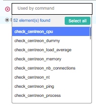

How to use select box¶
Multiple selection¶
There’s a variety of way to do multiple selections with Centreon’s select box
Using Shift key¶
You can select a range of items by holding “Shift” key between two selected items, by clicking on a first element then a second one.
Using Control key¶
You can select multiple items by holding “Ctrl” key when you select an item. This feature work only on Linux and Windows.
Select all action¶
You can select all elements of a select by clicking on the “Select all” button in dropdown.
This action add to selection all element even the element not visible in select dropdown. This selection is filtered using the search fields.
Full title on hover¶
When you hover a selected or unselected element, his title appears fully inside a popover.